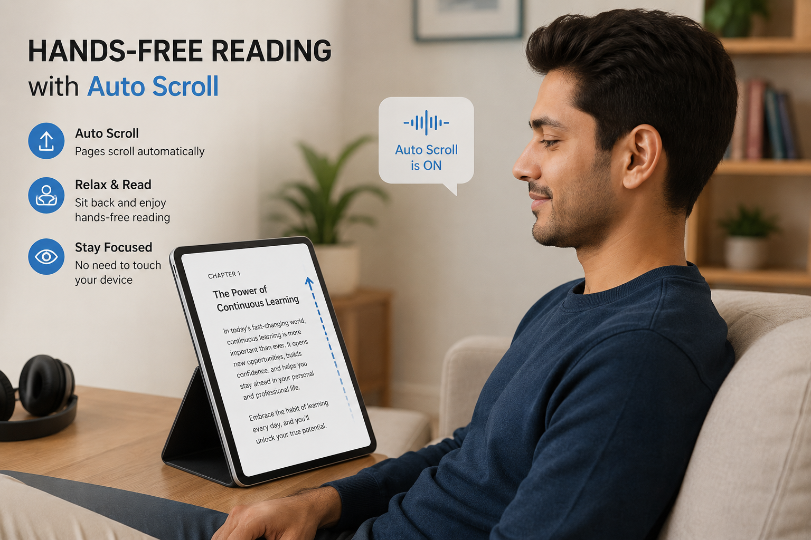
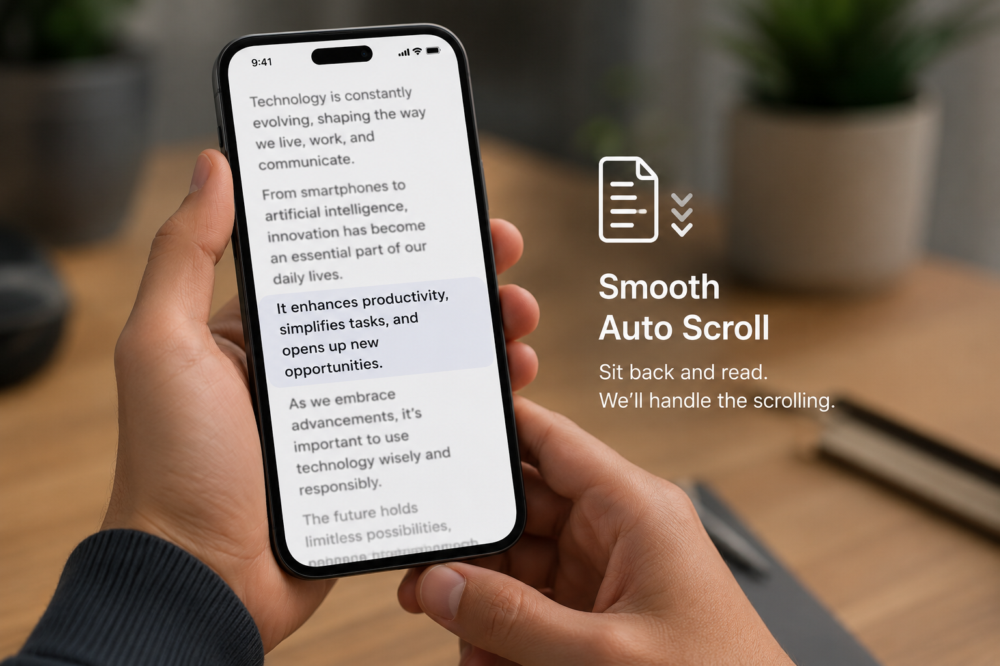

PDF Auto Scroll — Complete Guide to Hands-Free PDF Reading and Better Productivity
Discover how to transform your reading experience with PDF auto scroll. Reduce manual effort and improve focus during long reading and study sessions.

Introduction: Why PDF Auto Scroll Is Becoming Important
Reading long PDF documents is a daily task for students, professionals, researchers, and office workers. Whether it is study notes, business reports, or technical documentation, PDFs often contain dozens or even hundreds of pages.
The problem is simple:
Manual scrolling makes long reading sessions tiring and inefficient.
For example:
- Students revising long notes
- Professionals reviewing reports
- Researchers reading journals
- Users studying lengthy documents
Constantly scrolling breaks focus and slows down reading speed.
This is where PDF auto scroll becomes extremely useful.
Instead of manually moving page by page, auto scroll allows the PDF to move automatically at a controlled speed for a smooth reading experience. You can use this feature through JKM Edit Home and its productivity tools ecosystem.
What Is PDF Auto Scroll?
PDF auto scroll is a feature that automatically moves PDF pages vertically at a steady speed without manual scrolling.
In simple terms:
It turns PDF reading into a smooth, hands-free experience.
Example:
- 100-page document → continuous reading flow
- Study notes → smooth revision mode
- Reports → uninterrupted review session
Modern PDF auto scroll systems allow users to:
- control scrolling speed
- pause anytime
- resume reading
- improve reading flow
- reduce manual effort
Common Problems Without Auto Scroll
1. Manual Scrolling Breaks Focus
Users constantly:
- move mouse
- swipe screens
- change pages
This significantly interrupts reading flow.
2. Slow Reading Experience
Long documents take more time to digest when scrolling manually, often leading to slower overall reading speed.
3. Physical Fatigue
Extended scrolling causes:
- wrist strain
- finger fatigue (especially for mobile users)
- mental distraction
4. Poor Study Efficiency
Students often lose concentration and momentum when switching between pages manually during heavy study sessions.
Why PDF Auto Scroll Is Important
Better Reading Flow
Auto scroll creates a continuous, uninterrupted reading experience that keeps your eyes on the text instead of searching for the scrollbar.
Hands-Free Usage
Users can sit back, focus purely on content, and completely avoid manual interaction with their device.
Improved Productivity
It saves time during studying, reviewing complex documents, and reading extensive business reports.
Comfortable Long Reading Sessions
It is the ideal setup for absorbing large PDFs and long-form content comfortably.
Why People Prefer Auto Scroll Features
Modern users prefer tools that reduce effort, improve comfort, increase efficiency, and automate repetitive actions. Auto scroll helps eliminate unnecessary physical and mental manual work while reading PDFs, enabling a much cleaner reading environment.
How JKM Edit Supports Better PDF Reading Experience
1. Simple User Experience
JKM Edit focuses on providing clean, minimal, and easy-to-use tools for daily document handling.
2. Browser-Based Access
Users can access tools directly on desktop, laptop, Android, iPhone, and tablet devices. No heavy installations required.
3. Smooth Document Handling
The platform is designed to support fast loading times, a completely clean interface, and a distraction-free reading atmosphere.
4. Productivity-Focused Design
JKM Edit tools are tailor-made for students, professionals, freelancers, and researchers who demand efficiency.
5. Mobile-Friendly Experience
Supports smooth reading and auto-scrolling on smartphones with absolute ease.
Ready to read hands-free?
Upgrade your reading workflow. Stop swiping and start focusing.
Try PDF Auto Scroll Now
Step-by-Step Guide: How to Use PDF Auto Scroll Conceptually in JKM Edit
Step 1 — Open JKM Edit Platform
Visit the official homepage: 👉 https://jkmedit.in/
Step 2 — Open PDF Tools or Viewer
Access the document-related tool category dedicated specifically to reading and viewing PDFs.
Step 3 — Load Your PDF File
Open your document locally from your device. This can be your notes, reports, assignments, or eBooks.
Step 4 — Enable Continuous Reading Mode
Use the smooth scrolling or reading mode toggle for an uninterrupted viewing experience.
Step 5 — Adjust Reading Speed
Control the pace depending on your study needs and the overall complexity of the document.
Real-Life Use Cases for PDF Auto Scroll
Students
- reading textbooks
- revising notes
- exam preparation
Professionals
- reviewing extensive reports
- reading business documents
- analyzing proposals
Researchers
- reading academic journals
- reviewing research papers
- studying technical content
General Users
- reading eBooks
- browsing long guides
- viewing software manuals
Benefits of Using PDF Auto Scroll vs. Manual Scrolling
| Feature | Manual Scrolling | Auto Scroll |
|---|---|---|
| Effort | High | Low |
| Focus | Interrupted | Continuous |
| Speed | Slower | Faster |
| Comfort | Moderate | High |
| Productivity | Lower | Higher |
Privacy and Security in PDF Viewing Tools
Users often read highly sensitive documents such as academic research, business reports, or personal files. Maintaining document privacy is crucial. JKM Edit maintains a clean and secure browser-based experience entirely focused on usability and convenience, ensuring your documents remain safe.
Why Fast Reading Tools Matter
Modern users expect smooth navigation, instant access, and a distraction-free experience. Slow reading workflows significantly reduce efficiency and increase physical fatigue. A proper reading environment can double a user's productivity output.
Mobile PDF Reading and Auto Scroll Growth
Mobile users increasingly consume study materials, business reports, and online documents directly from their phones. Auto scroll acts as a big help here as it improves one-hand reading, facilitates smooth navigation, and drastically reduces thumb and finger movement.

Best Practices for PDF Auto Scroll Usage
- Use moderate scrolling speed: Start slow to ensure you can digest the information comfortably.
- Adjust brightness for comfort: Prevent eye strain, especially during evening study sessions.
- Take breaks: Ensure you take breaks during long reading sessions to reset your focus.
- Use zoom for readability: Ensure the text size is large enough to prevent leaning into your screen.
Future of PDF Reading Tools
Future improvements in the reading tool space may include AI-based reading speed control (adjusting pace based on text difficulty), voice-assisted reading commands, smart page detection, and highly adaptive scroll modes.
Frequently Asked Questions (FAQs)
PDF auto scroll is a feature that automatically moves PDF pages vertically at a steady speed without requiring any manual swiping or mouse movement, creating a hands-free reading experience.
Yes, by eliminating the physical interruption of turning pages and maintaining a constant flow, auto scroll helps users maintain focus and process information faster.
Absolutely. Modern browser-based tools like those on JKM Edit allow you to use continuous reading modes directly on your Android or iPhone device without installing extra apps.
Yes, JKM Edit provides a clean, accessible ecosystem of PDF productivity tools entirely for free, straight from your browser.
Summary
PDF auto scroll is a simple but powerful feature that transforms how users read long documents. It significantly reduces manual effort, improves mental focus, and increases overall productivity.
For students, professionals, and researchers, it makes reading noticeably smoother and more efficient.
With JKM Edit, users get a clean and fast experience for handling PDFs and accessing productivity tools all in one place. By focusing on simplicity and true usability, JKM Edit helps users read and manage documents more effectively in their daily workflow.
Visit 👉 https://jkmedit.in/ today to transform your reading.
Experience Hands-Free PDF Reading
Load your document and let the screen scroll for you. Save time and focus entirely on your content.
Start Auto Scrolling